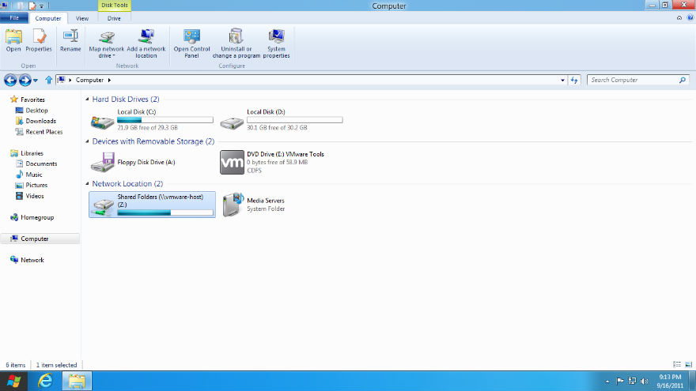

vmware8下给windows8安装vmware tools
2011-09-17
昨晚在Vmware8下安装了windows8，今天打开发现没有声音。晕，竟然忘了安装Vmware tool了！这里先说一下安装VMware tool有什么好处：
- 解决windows8在vmware8下没有声音的问题；
- 解决不能在自身系统和虚拟机vmware8之间拷贝，粘贴，移动数据和文件的问题；
- 解决共享文件夹在vmware8的windows8下不能使用的问题；
- 其他好处；
下面简单的说说如何在Vmware8下为window8-dev-preview(开发者预览版)安装vmware tool。
1、 安装完VMware Workstation 8.0.0.471780之后，在安装目录下自带了适合各个系统的vmware tools，这里我们当然选用windows.iso啦！在windows8虚拟机设置的光盘(CD/DVD)设置里面输入windows.iso的路径，比如我的是：D:\SOFTWARE\VMWARE\windows.iso，勾选：Connected at Power on，启动windows8系统；

2、 进入windows8-->Desktop-->Computer，发现虚拟光驱以正确加载，你要做的就是双击光盘里面的setup，安装vmware tool就可以了。

3、 重启系统，发现windows8声音有了，可以自由在虚拟机和电脑之间移动传输数据了，可以自由设置共享文件夹了(如下图所示)，虚拟机和电脑之间的共享文件夹可以点击图上面的"Map Network Drive"来实现。 
自此，windows8在vmware虚拟机下面没有声音等系列问题得到解决。
(如果本文对你有帮助，欢迎收藏转载，谢谢)
Category: articles Tagged: z/OS